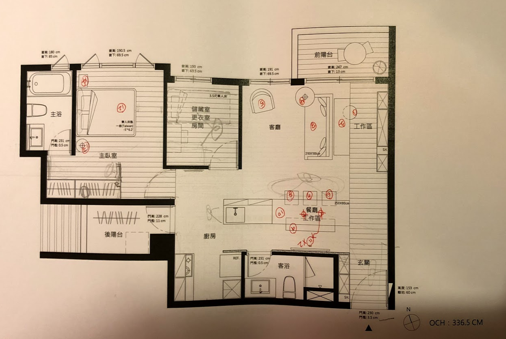

<!DOCTYPE html>
<html>
<title>main-dwg</title>
<meta name="viewport" content="width=device-width, initial-scale=1">
<link rel="stylesheet" href="https://www.w3schools.com/w3css/4/w3.css">

<body>

    <div class="w3-container w3-teal">
        <h1>平面配置圖D</h1>
    </div>

    

    <div class="w3-container">
        <p><ul>
            <li>雙工作區：大桌台工作區以及沙發後方工作區</li>
            <li>入門右側全身鏡以及延展黑板牆設計</li>
            <li>沙發前白板牆討論與休息放空區域</li>
            <li>入門前側視覺延展到陽台設計</li>
            <li>入門後左側之視線對齊</li>
            <li>中島設計</li>
            <li>客廳沙發區前移，以避免入門後直接映入眼簾</li>
        </ul></p>
          
    </div>

    <div class="w3-container w3-teal">
        <p></p>
    </div>

</body>

</html>